Needle 3：專為微型設備打造的
自動化基底模型 (Automation Foundation Model)
將端側 AI 推向極致：告別龐大雲端 LLM 的高延遲、高頻寬與隱私風險。Needle 專注於工具調用 (Tool Calls)、結構化萃取 (Structured Extraction)與本地設備控制，在僅 8~29 MB 的體積下，達到超越 10 倍參數模型的執行準確度。

01 這個專案究竟能做什麼？ (Project Overview)
在傳統邊緣裝置（如智慧家居中控、穿戴裝置、機器人、車載中控）上運行 AI，面臨著「雲端 LLM 延遲高且需聯網」或「本地小模型胡言亂語 (幻覺)、無法精準輸出 JSON 格式」的兩難境地。Needle 重新定義了小型模型的設計哲學：它放棄了一般開放式聊天 (General Chat)，將全部參數量投注於「精確理解意圖並調用硬體 API」。
🎯 精確工具調用 (Precise Tool Calling)
給定應用程式暴露的 Python 函式或 JSON Schema，Needle 能精準選取對應工具，並從用戶自然語言中抽取出各項參數。一次請求需要兩個動作，便按順序返回兩個呼叫；請求超出支援範圍時，直接返回空陣列拒絕，絕不強行瞎猜。
📋 零出錯結構化萃取 (Structured Extraction)
定義目標資料結構（如 Pydantic 模型），將凌亂的自然語言、語音轉文字雜訊、發票、行程通知丟給 Needle，即可在毫秒級時間內提取出保證符合 Type 的欄位資料，兼具分類與提取能力。
🧭 本地語意向量與路由 (Text Embedding)
模型本身可為句子輸出 128 維語意向量（Vector Embeddings）。當系統註冊超過 5 個工具時，內建的 Retrieval Head 會自動以向量檢索出 Top-5 候選工具，實現大規模工具集的快速路由。
🛡️ 校準置信度與接地驗證 (Confidence & Grounding)
每一次回應皆附帶一個校準後的置信度分數（0.0 ~ 1.0），並具備 Grounding Gate（實體比對與日期修復），如果參數未在輸入上下文找到依據，系統會主動攔截並移入 suppressed_calls，供人機協同二次確認。

02 技術突破與架構原理 (Under the Hood)
Needle 3 並非一般常見的 Llama 或 Qwen 剪枝模型，而是基於全新的 Laddered Simple Attention Network 階梯式架構設計：
.cact 檔案，引擎可直接在記憶體中 mmap 就地讀取。03 具體實作範例 (Concrete Real-World Examples)
以下透過三個代表性場景，展示 Needle 在 Python 端側程式碼中的極簡使用方式。
範例 1：智慧家庭與掃地機器人聯動控制 (Agentic Tool Calling)
用戶以口語化指令同時控制「調光」與「掃地機器人」，Needle 自動生成多個有序工具調用，並完成完整執行閉環：
import needle
from typing import Literal, Optional, Annotated
# 1. 以純 Python 裝飾器定義硬體控制工具
@needle.tool
def control_lights(
room: Literal["kitchen", "living_room", "bedroom"],
action: Literal["on", "off", "dim"],
brightness_percent: Annotated[Optional[int], needle.Field(ge=0, le=100)] = None,
color: Optional[Literal["warm white", "cool white", "blue"]] = None,
):
"""控制指定房間的燈光開關、亮度百分比或顏色。"""
return {"device": "light", "room": room, "status": action, "pct": brightness_percent, "color": color}
@needle.tool
def start_robot_vacuum(
action: Literal["start", "stop", "dock"],
target_room: Optional[Literal["kitchen", "living_room", "bedroom"]] = None,
):
"""啟動或暫停掃地機器人，或派遣其至特定房間清掃。"""
return {"device": "vacuum", "action": action, "target": target_room}
# 2. 初始化 Needle 端側 Agent
agent = needle.Needle(
tools=[control_lights, start_robot_vacuum],
system="date: 2026-09-19 Sat; device: edge_hub; location: living_room"
)
# 3. 執行包含複合指令的自然語言
user_query = "把客廳燈光調為 35% 暖白光，另外讓掃地機器人去清掃廚房"
response = agent.run(user_query)
# 4. 檢視模型輸出結果
print(response["function_calls"])
print(response["confidence"]) # 0.96 (極高置信度)
print(response["results"]) # 工具自動執行完畢的返回值
{
"type": "call",
"confidence": 0.96,
"reasoning": "'客廳' -> room living_room; '35%' -> brightness_percent 35; '暖白光' -> color warm white; '掃地機器人' + '廚房' -> start_robot_vacuum target kitchen",
"function_calls": [
{
"name": "control_lights",
"arguments": {
"room": "living_room",
"action": "dim",
"brightness_percent": 35,
"color": "warm white"
}
},
{
"name": "start_robot_vacuum",
"arguments": {
"action": "start",
"target_room": "kitchen"
}
}
],
"results": [
{"device": "light", "room": "living_room", "status": "dim", "pct": 35, "color": "warm white"},
{"device": "vacuum", "action": "start", "target": "kitchen"}
]
}誰是莎士比亞？」一般 LLM 會擅自以自然語言長篇大論或隨意捏造參數。而在 Needle 中，系統直接返回：
{"type": "call", "function_calls": [], "confidence": 0.0}主動安全拒絕（Refusal），保證物聯網設備不會因模型的幻覺而觸發錯誤動作。
範例 2：離線穿戴設備發票/票據結構化萃取 (Pydantic Extraction)
無需聯網，利用 needle.extract() 直接在手錶或手機端將 OCR 雜訊轉換為標準 Pydantic 物件：
from pydantic import BaseModel
import needle
class ExpenseRecord(BaseModel):
vendor: str
total_amount: float
currency: str
category: Literal["meal", "transport", "hardware"]
receipt_text = "發票明細：向【超微機器人實驗室】採購舵機零件，總計收取新台幣 $4,200 元整，含運送。"
# 單行呼叫，毫秒級完成提取
record = needle.extract(receipt_text, schema=ExpenseRecord)
print(record)
# 輸出結果: ExpenseRecord(vendor='超微機器人實驗室', total_amount=4200.0, currency='TWD', category='hardware')
範例 3：基於置信度門檻的安全決策分級 (Confidence Gating)
在工業或車載關鍵控制中，可依據 Needle 的 calibrated confidence 分流：
turn = agent.complete(voice_input)
calls = turn["function_calls"]
held = turn["suppressed_calls"] # 遭安全門閥扣留的疑似呼叫
conf = turn["confidence"]
if calls and conf >= 0.75:
execute_actions(calls) # 1. 高置信度：立即自動執行
elif calls or held:
ask_user_confirmation(calls or held, turn["reasoning"]) # 2. 中置信度：彈出 UI 詢問用戶確認
else:
speak_to_user("抱歉，我無法處理這個指令或查無對應功能。") # 3. 拒絕：安全提示
04 基準評測數據 (Benchmarks & Evaluation)
Needle 3 在各項公認的函式調用與語意提取基準測試中，展現了「小模型打大模型」的驚人表現。以手機操作為主的 Mobile Actions 與多步驟調用 DroidCall 測試中，Needle 3 甚至直逼雲端旗艦 DeepSeek V4 Flash：
| 模型名稱 | 參數規模 | 運行型態 | Mobile Actions (準確率) | DroidCall (有序調用) | BFCL v4 (AST Match) | SNIPS Gold (F1) |
|---|---|---|---|---|---|---|
| Needle 3 (20L) | 121M (等效50M) | 端側 (2-bit / 35MB) | 86.0% | 47.0% | 50.2% | 30.2% |
| Needle 3 (16L) | 98M | 端側 (2-bit / 29MB) | 80.7% | 40.0% | 41.3% | 23.5% |
| Needle 3 (8L) | 52M | 端側 (2-bit / 15MB) | 36.8% | 36.5% | 28.2% | 16.6% |
| DeepSeek V4 Flash | 數百億級 MoE | 雲端 API | 88.4% | 60.5% | 77.2% | 69.4% |
| LFM 2.5 | 1.2B (1200M) | 本地 FP16 | 82.4% | 35.5% | 62.0% | 43.0% |
| Qwen 3.5 | 0.8B (800M) | 本地 FP16 | 76.0% | 28.0% | 56.8% | 35.0% |
| FunctionGemma | 270M | 本地 FP16 | 65.1% | 16.5% | 46.6% | 29.0% |
| Apple FM | 3.0B (3000M) | 本地端側 | 57.6% | - | - | - |

微調潛力：4 層 29M 子網路微調即可超越 DeepSeek
Needle 的階梯式架構極具客製化潛力。透過內建的 needle finetune 指令訓練 LoRA 適配器後，模型各子網路在垂直領域的準確度獲得 18 ~ 36 個百分點的飛躍提升：

05 跨平臺邊緣部署生態 (Deployment & Ecosystem)
Needle 官方發行了支援 13 個平臺目錄 的原生執行檔與 C 靜態庫 (libneedle.a / needle.h)，體積均小於 1 MB，不需要任何 Python 或深度學習環境即可在裸機運行：

needle3.cact 權重# 為樹莓派 (Raspberry Pi) 下載 8 層 (52M) 的輕量化套件
$ needle build --platform linux-arm64 --layers 8 --out ./pi_bundle
# 在 Mac 上直接作為本機守護程序啟動，對外提供 HTTP/RPC 服務
$ ./macos-arm64/needle --model needle3.cact --tools tools.json --serve --port 8080
# 本地啟動視覺化 Playground 互動介面
$ needle playground
06 總結與價值評估 (Executive Takeaways)
🏆 真正的端側可用性
傳統 7B、3B 模型即使量化到 4-bit 也需要 2~4 GB 記憶體，發熱嚴重且耗電巨大。Needle 僅需 8 ~ 29 MB 記憶體，可在穿戴設備或百元級微控制器上長駐運作。
🔒 100% 離線與資料隱私
醫療器材、智慧車輛、居家隱私攝影機等對數據安全要求嚴苛的場景，無需聯網、零遙測外洩風險（支援 NEEDLE_TELEMETRY=0 完全離線斷網）。
⚡ 工業級的確定性
解碼階段語法嚴格約束 + 置信度校準，杜絕了「隨機幻覺」破壞下游硬體指令的致命風險，是目前工業物聯網與邊緣 Agent 的最佳選擇。